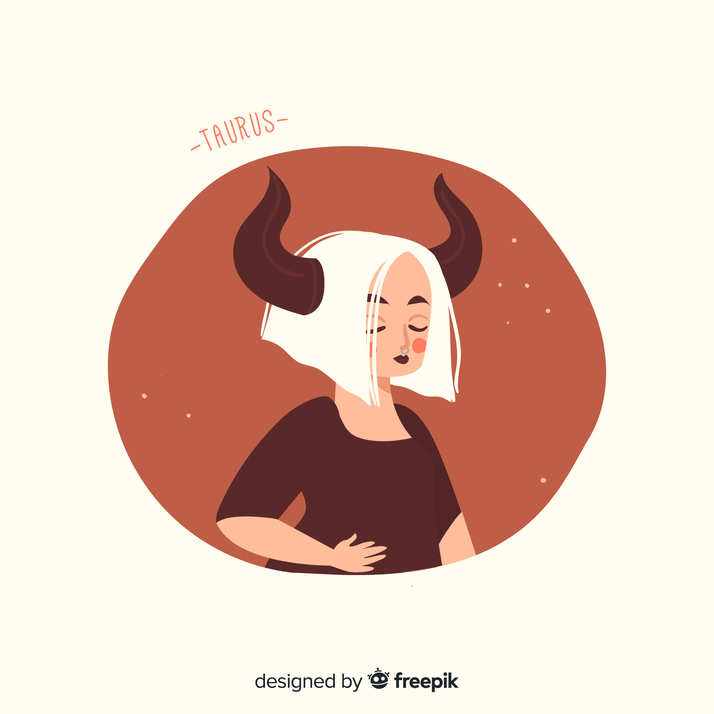
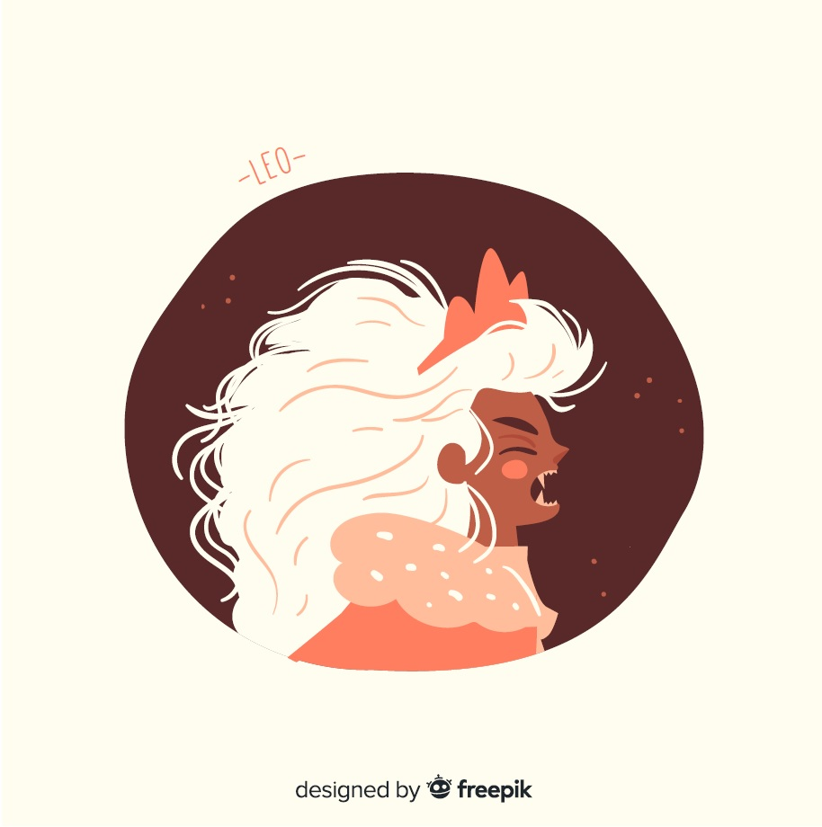
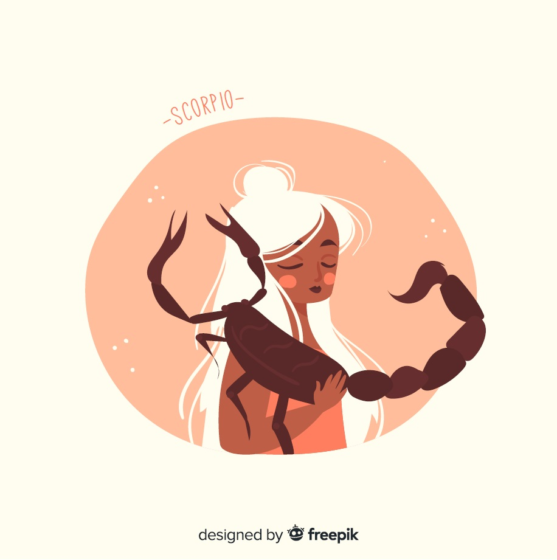

Bélier
(21 mars - 19 avril)
- Élément: Feu
- Qualité: Franc
- Défaut: Impulsif

Taureau
Taureau
(20 avril - 20 mai)
- Élément: Terre
- Qualité: Stable
- Défaut: Têtu

Gémeaux
(21 mai - 20 juin)
- Élément: Air
- Qualité: Adaptable
- Défaut: Superficiel

Cancer
(21 juin - 22 juillet)
- Élément: Eau
- Qualité: Protecteur
- Défaut: Jaloux

Lion
Lion
(23 juillet - 22 août)
- Élément: Feu
- Qualité: Intègre
- Défaut: Autoritaire

Vierge
(23 août - 22 septembre)
- Élément: Terre
- Qualité: Discipliné
- Défaut: Manque de souplesse

Balance
(23 septembre - 22 octobre)
- Élément: Air
- Qualité: Diplomatique
- Défaut: Indécis

Scorpion
Scorpion
(23 oct. - 21 novembre)
- Élément: Eau
- Qualité: Profond
- Défaut: Impitoyable

Sagittaire
(22 novembre - 21 décembre)
- Élément: Feu
- Qualité: Judicieux
- Défaut: Trop moraliste

Capricorne
(22 décembre - 19 janvier)
- Élément: Terre
- Qualité: Patient
- Défaut: Intériorisé

Verseau
(20 janvier - 18 février)
- Élément: Air
- Qualité: Libéral
- Défaut: Excentrique

Poisson
(19 février - 20 mars)
- Élément: Eau
- Qualité: Charitable
- Défaut: Anxieux